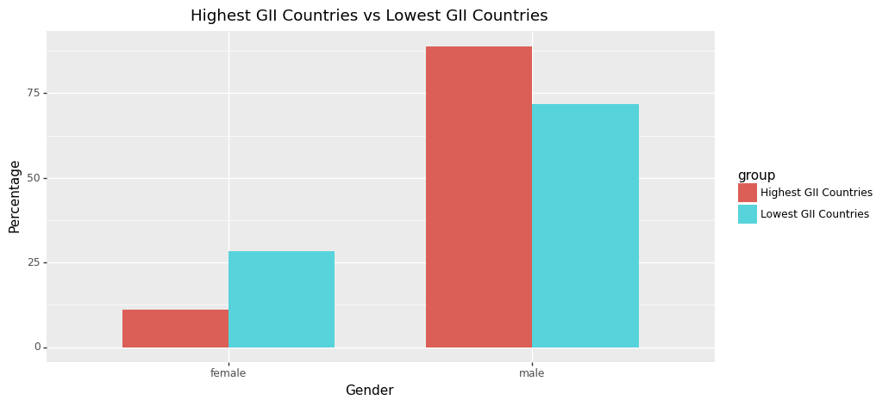
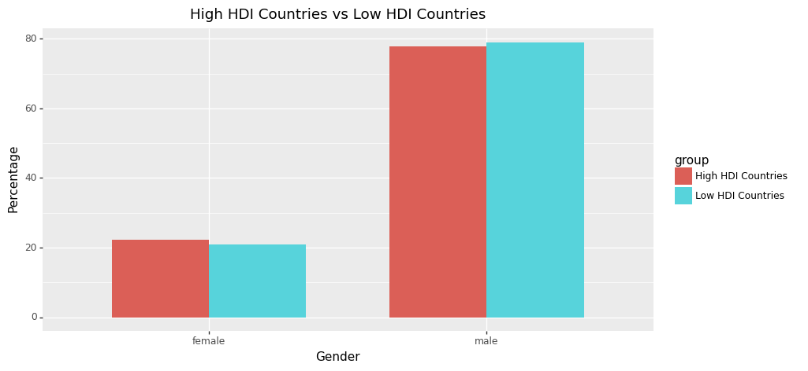
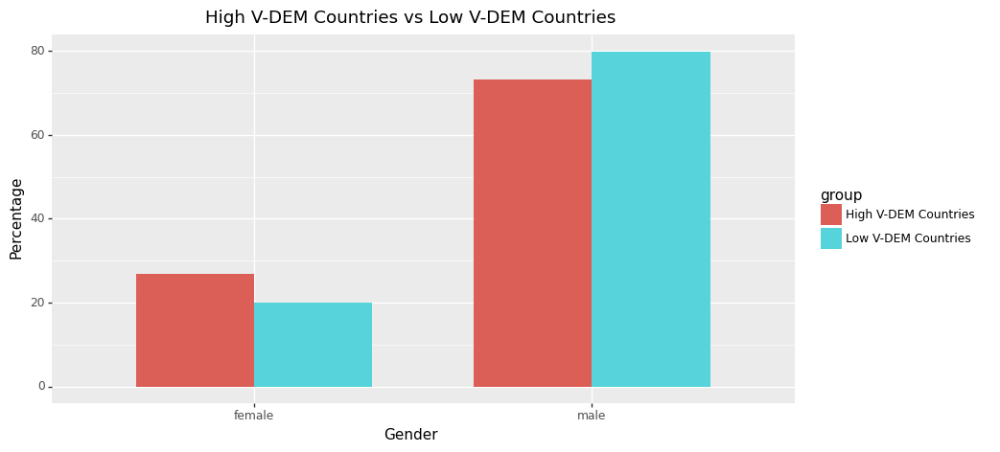
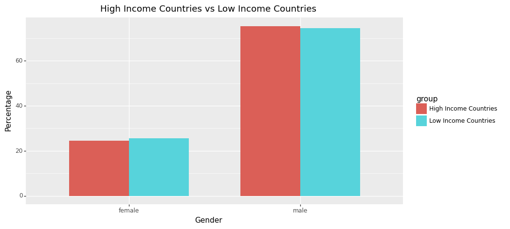
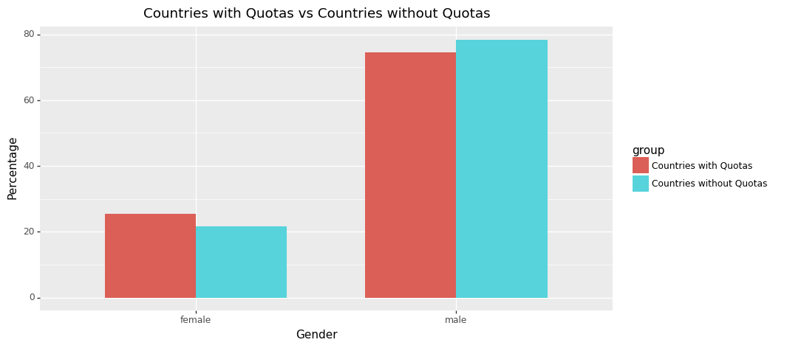

Code
import pandas as pd
from plotnine import *
df=pd.read_csv('data/data.csv')import utils
# '''This module contains utility functions, variables, and data structures for use in the notebooks.'''
import pandas as pd
#------------------------------------Top and bottom countries of indices------------------------------------
# UN Indices Data:
indices_data=pd.read_csv('data/UN HDR all indices data.csv')
indices_data=indices_data[['country','hdi_2021','le_2021','eys_2021','mys_2021','gnipc_2021', 'gdi_2021','ihdi_2021','coef_ineq_2021','region', 'gii_2021']]
high_hdi=indices_data[indices_data['hdi_2021']>0.8]['country'].tolist()
low_hdi=indices_data[indices_data['hdi_2021']<0.7]['country'].tolist()
top_50_mys=indices_data.sort_values(by=['mys_2021'], ascending=False).head(50)['country'].tolist()
bottom_50_mys=indices_data.sort_values(by=['mys_2021'], ascending=True).head(50)['country'].tolist()
top_gii=indices_data.sort_values(by=['gii_2021'], ascending=False).head(20)['country'].tolist()
bottom_gii=indices_data.sort_values(by=['gii_2021'], ascending=True).head(20)['country'].tolist()
#------------------------------------Income groups------------------------------------
# World Bank Data:
wb_data=pd.read_csv('data/income_data.csv')
low_income=wb_data[wb_data['Income group']=='Low income']['Country'].tolist()
high_income=wb_data[wb_data['Income group']=='High income']['Country'].tolist()
#------------------------------------V-Dem Electoral Democracy Score------------------------------------
vdem_data=pd.read_csv('data/v_dem_elec_democracy.csv')
vdem_data=vdem_data.query('Year==2022')
low_dem=vdem_data[vdem_data['electdem_vdem_owid']<0.4]['Entity'].tolist()
high_dem=vdem_data[vdem_data['electdem_vdem_owid']>0.8]['Entity'].tolist()
#------------------------------------Hemispheres------------------------------------
#north_hem=['Algeria', 'Benin', 'Burkina Faso', 'Burundi', 'Cameroon', 'Central African Republic', 'Chad', 'Comoros', 'Djibouti', 'Egypt', 'Equatorial Guinea', 'Eritrea', 'Ethiopia', 'Gabon', 'Gambia', 'Ghana', 'Guinea', 'Guinea-Bissau', 'Ivory Coast', 'Kenya', 'Liberia', 'Libya', 'Mali', 'Mauritania', 'Niger', 'Nigeria', 'Rwanda', 'Senegal', 'Sierra Leone', 'Somalia', 'South Sudan', 'Sudan', 'Tanzania', 'Togo', 'Tunisia', 'Uganda', 'Zambia', 'Zimbabwe', 'Afghanistan', 'Armenia', 'Azerbaijan', 'Bahrain', 'Bangladesh', 'Bhutan', 'Brunei', 'Cambodia', 'China', 'Cyprus', 'Georgia', 'India', 'Indonesia', 'Iran', 'Iraq', 'Israel', 'Japan', 'Jordan', 'Kazakhstan', 'Kuwait', 'Kyrgyzstan', 'Laos', 'Lebanon', 'Malaysia', 'Maldives', 'Mongolia', 'Myanmar', 'Nepal', 'North Korea', 'Oman', 'Pakistan', 'Palestine', 'Philippines', 'Qatar', 'Russia', 'Saudi Arabia', 'Singapore', 'South Korea', 'Sri Lanka', 'Syria', 'Taiwan', 'Tajikistan', 'Thailand', 'Turkey', 'Turkmenistan', 'United Arab Emirates', 'Uzbekistan', 'Vietnam', 'Albania', 'Andorra', 'Austria', 'Belarus', 'Belgium', 'Bosnia and Herzegovina', 'Bulgaria', 'Croatia', 'Czech Republic', 'Denmark', 'Estonia', 'Finland', 'France', 'Germany', 'Greece', 'Hungary', 'Iceland', 'Ireland', 'Italy', 'Latvia', 'Liechtenstein', 'Lithuania', 'Luxembourg', 'Macedonia', 'Malta', 'Moldova', 'Monaco', 'Montenegro', 'Netherlands', 'North Macedonia', 'Norway', 'Poland', 'Portugal', 'Romania', 'San Marino', 'Serbia', 'Slovakia', 'Slovenia', 'Spain', 'Sweden', 'Switzerland', 'Vatican City', 'Antigua and Barbuda', 'Bahamas', 'Barbados', 'Belize', 'Canada', 'Costa Rica', 'Cuba', 'Dominica', 'Dominican Republic', 'El Salvador', 'Grenada', 'Guatemala', 'Haiti', 'Honduras', 'Jamaica', 'Mexico', 'Nicaragua', 'Panama', 'Saint Kitts and Nevis', 'Saint Lucia', 'Saint Vincent and the Grenadines', 'Trinidad and Tobago', 'United States of America', 'Oceania', 'Fiji', 'Kiribati', 'Marshall Islands', 'Micronesia', 'Nauru', 'New Zealand', 'Palau', 'Papua New Guinea', 'Samoa', 'Solomon Islands', 'Tonga', 'Tuvalu', 'Vanuatu']
countries=pd.read_csv('data/countries.csv',encoding='latin-1')
north_hem=countries[countries['latitude']>0]['name'].tolist()
south_hem=countries[countries['latitude']<0]['name'].tolist()
#------------------------------------Gender quotas------------------------------------
quotas_df=pd.read_csv('data/gender_quotas.csv')
legal_quotas=quotas_df[quotas_df['Voluntary political party quotas']=='No']['Country'].tolist()
# Gender inequality index (GII)
top_gii=df.query('country in @top_gii')
bottom_gii=df.query('country in @bottom_gii')
top_gii_df=top_gii.groupby('gender').count()[['name']]
bottom_gii_df=bottom_gii.groupby('gender').count()[['name']]
gender_df=pd.merge(top_gii_df, bottom_gii_df, how='inner',left_index=True,right_index=True)
gender_df.columns=['top_gii','bottom_gii']
# Add columns for percentage
gender_df['top_gii_pc']=(gender_df['top_gii']/gender_df['top_gii'].sum()*100).round(2)
gender_df['bottom_gii_pc']=(gender_df['bottom_gii']/gender_df['bottom_gii'].sum()*100).round(2)
# gender_df# Create a double bar plot for Gender Inequality Index analysis
gii_plot_df=pd.concat([gender_df[['top_gii_pc']].rename(columns={'top_gii_pc':'percentage'})\
,gender_df[['bottom_gii_pc']].rename(columns={'bottom_gii_pc':'percentage'})],axis=0).reset_index()
gii_plot_df['group']=['Highest GII Countries' if i<2 else 'Lowest GII Countries' for i in range(4)]
ggplot(gii_plot_df,aes(x='gender',y='percentage',fill='group'))\
+ geom_bar(stat='identity', position='dodge', width=0.7) \
+ labs(x='Gender', y='Percentage', title='Highest GII Countries vs Lowest GII Countries') \
+ theme(figure_size=(10, 5))
# HDI
high_hdi=df.query('country in @high_hdi')
low_hdi=df.query('country in @low_hdi')
high_hdi_df=high_hdi.groupby('gender').count()[['name']]
low_hdi_df=low_hdi.groupby('gender').count()[['name']]
gender_df=pd.merge(high_hdi_df, low_hdi_df, how='inner',left_index=True,right_index=True)
gender_df.columns=['high_hdi','low_hdi']
# Add columns for percentage
gender_df['high_hdi_pc']=(gender_df['high_hdi']/gender_df['high_hdi'].sum()*100).round(2)
gender_df['low_hdi_pc']=(gender_df['low_hdi']/gender_df['low_hdi'].sum()*100).round(2)
# gender_df # Create a double bar plot for HDI analysis
hdi_plot_df=pd.concat([gender_df[['high_hdi_pc']].rename(columns={'high_hdi_pc':'percentage'})\
,gender_df[['low_hdi_pc']].rename(columns={'low_hdi_pc':'percentage'})],axis=0).reset_index()
hdi_plot_df['group']=['High HDI Countries' if i<2 else 'Low HDI Countries' for i in range(4)]
# hdi_plot_df
ggplot(hdi_plot_df,aes(x='gender',y='percentage',fill='group'))\
+ geom_bar(stat='identity', position='dodge', width=0.7) \
+ labs(x='Gender', y='Percentage', title='High HDI Countries vs Low HDI Countries') \
+ theme(figure_size=(10, 5))
# V-Dem
high_vdem=df.query('country in @high_dem')
low_vdem=df.query('country in @low_dem')
high_vdem_df=high_vdem.groupby('gender').count()[['name']]
low_vdem_df=low_vdem.groupby('gender').count()[['name']]
gender_df=pd.merge(high_vdem_df, low_vdem_df, how='inner',left_index=True,right_index=True)
gender_df.columns=['high_vdem','low_vdem']
# Add columns for percentage
gender_df['high_vdem_pc']=(gender_df['high_vdem']/gender_df['high_vdem'].sum()*100).round(2)
gender_df['low_vdem_pc']=(gender_df['low_vdem']/gender_df['low_vdem'].sum()*100).round(2)
# gender_df
# Create a double bar plot for V-DEM analysis
vdem_plot_df=pd.concat([gender_df[['high_vdem_pc']].rename(columns={'high_vdem_pc':'percentage'})\
,gender_df[['low_vdem_pc']].rename(columns={'low_vdem_pc':'percentage'})],axis=0).reset_index()
vdem_plot_df['group']=['High V-DEM Countries' if i<2 else 'Low V-DEM Countries' for i in range(4)]
ggplot(vdem_plot_df,aes(x='gender',y='percentage',fill='group'))\
+ geom_bar(stat='identity', position='dodge', width=0.7) \
+ labs(x='Gender', y='Percentage', title='High V-DEM Countries vs Low V-DEM Countries') \
+ theme(figure_size=(10, 5))
# Income Category
high_income=df.query('country in @high_income')
low_income=df.query('country in @low_income')
high_income_df=high_income.groupby('gender').count()[['name']]
low_income_df=low_income.groupby('gender').count()[['name']]
gender_df=pd.merge(high_income_df, low_income_df, how='inner',left_index=True,right_index=True)
gender_df.columns=['high_income','low_income']
# Add columns for percentage
gender_df['high_income_pc']=(gender_df['high_income']/gender_df['high_income'].sum()*100).round(2)
gender_df['low_income_pc']=(gender_df['low_income']/gender_df['low_income'].sum()*100).round(2)
gender_df
# Create a double bar plot for Income analysis
income_plot_df=pd.concat([gender_df[['high_income_pc']].rename(columns={'high_income_pc':'percentage'})\
,gender_df[['low_income_pc']].rename(columns={'low_income_pc':'percentage'})],axis=0).reset_index()
income_plot_df['group']=['High Income Countries' if i<2 else 'Low Income Countries' for i in range(4)]
ggplot(income_plot_df,aes(x='gender',y='percentage',fill='group'))\
+ geom_bar(stat='identity', position='dodge', width=0.7) \
+ labs(x='Gender', y='Percentage', title='High Income Countries vs Low Income Countries') \
+ theme(figure_size=(10, 5))
# Gender Quotas
quotas=df.query('country in @legal_quotas')
no_quotas=df.query('country not in @legal_quotas')
quotas_df=quotas.groupby('gender').count()[['name']]
no_quotas_df=no_quotas.groupby('gender').count()[['name']]
gender_df=pd.merge(quotas_df, no_quotas_df, how='inner',left_index=True,right_index=True)
gender_df.columns=['quotas','no_quotas']
# Add columns for percentage
gender_df['quotas_pc']=(gender_df['quotas']/gender_df['quotas'].sum()*100).round(2)
gender_df['no_quotas_pc']=(gender_df['no_quotas']/gender_df['no_quotas'].sum()*100).round(2)
# gender_df
# Create a double bar plot for Quotas analysis
income_plot_df=pd.concat([gender_df[['quotas_pc']].rename(columns={'quotas_pc':'percentage'})\
,gender_df[['no_quotas_pc']].rename(columns={'no_quotas_pc':'percentage'})],axis=0).reset_index()
income_plot_df['group']=['Countries with Quotas' if i<2 else 'Countries without Quotas' for i in range(4)]
ggplot(income_plot_df,aes(x='gender',y='percentage',fill='group'))\
+ geom_bar(stat='identity', position='dodge', width=0.7) \
+ labs(x='Gender', y='Percentage', title='Countries with Quotas vs Countries without Quotas') \
+ theme(figure_size=(10, 5))